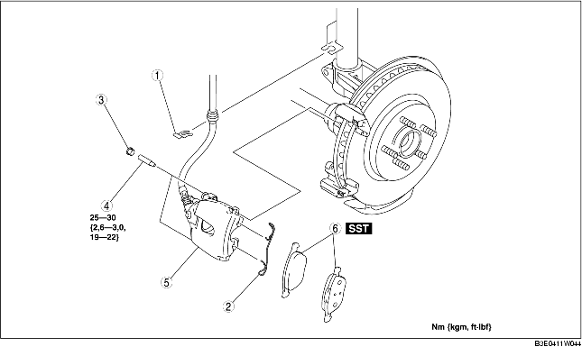

1. Verwijder de onderdelen in de aangegeven volgorde, zie de tabel.
2. Plaats de onderdelen in omgekeerde volgorde.
3. Trap na het plaatsen het rempedaal een paar keer in en controleer of de remblokken niet aanlopen.

.